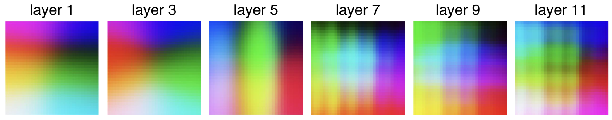
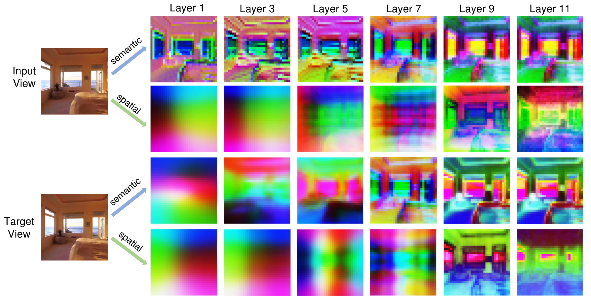
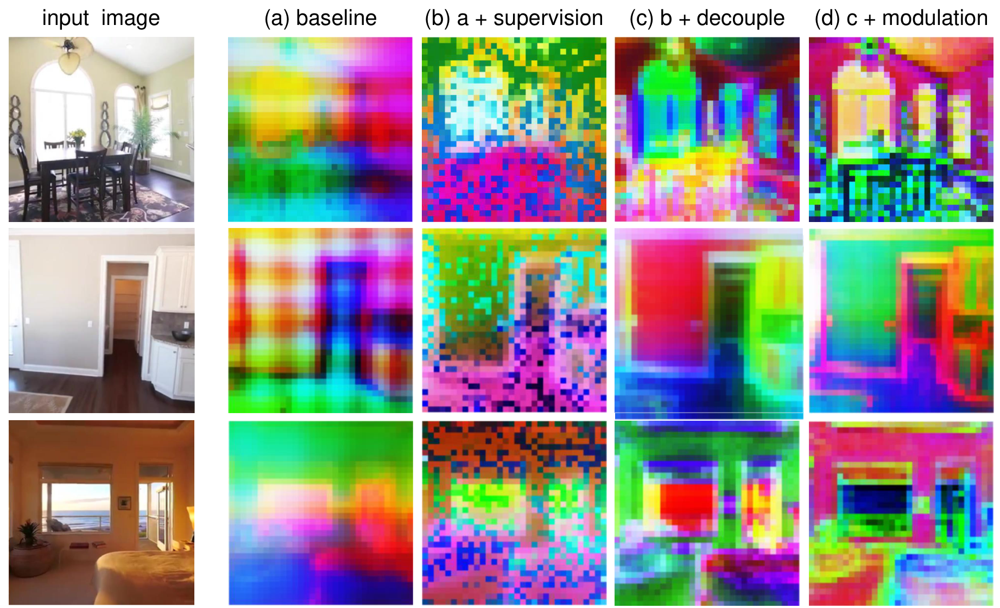

Semantic branch
Appearance tokens can receive DINOv3/iREPA supervision during training.
Feedforward novel view synthesis
A method for separating RGB semantic tokens from Plucker-ray spatial tokens while preserving shared attention routing.
Abstract
Transformer-based feedforward novel view synthesis models commonly concatenate RGB appearance tokens and Plucker-ray geometry tokens into one latent feature space. This coupling can make geometry leak into semantic appearance features and create ambiguous representations. Semantic-Spatial Decoupling keeps the two streams explicit: RGB patch tokens form a semantic branch, Plucker-ray patch tokens form a spatial branch, and Independent-V attention shares Q/K routing while preserving branch-specific value updates. Branch-specific training supervision and lightweight modulation can be added without changing the compact inference path.
Problem Evidence
Plucker representations evolve into grid-like layer patterns, showing that camera-space structure remains strong inside the learned features. When this spatial signal shares a single stream with RGB appearance, the model risks mixing geometry and semantics in ways that are hard for rendering heads to untangle.

Method Overview
The architecture decouples semantic and spatial value updates while retaining shared attention routing. This keeps the branches aligned without forcing them into the same latent state.

Appearance tokens can receive DINOv3/iREPA supervision during training.
Geometry tokens can receive DA3-derived spatial consistency supervision.
Shared Q/K attention preserves coordinated routing; independent values preserve branch identity.
The base design keeps token width fixed, and training-only teachers are removed at inference.
Feature Analysis
Multi-layer visualizations show the semantic and spatial branches taking different roles as depth increases. The semantic branch tracks appearance structure, while the spatial branch keeps camera-dependent geometry explicit.

Controlled Results
These tables report controlled reimplementation results. Baselines and decoupled variants use the same codebase, data split, view sampling, 256x256 resolution, 50K-step schedule, and training budget. They should not be read as direct comparisons to official large-scale LVSM checkpoints.
| Architecture | Dataset | Model | PSNR up | SSIM up | LPIPS down |
|---|---|---|---|---|---|
| Decoder-only | RE10K | Baseline | 26.10 | 0.839 | 0.144 |
| Decoder-only | RE10K | Ours (full) | 27.21 | 0.869 | 0.125 |
| Decoder-only | Objaverse | Baseline | 23.75 | 0.864 | 0.150 |
| Decoder-only | Objaverse | Ours (full) | 26.46 | 0.899 | 0.101 |
| Encoder-decoder | RE10K | Baseline | 24.06 | 0.775 | 0.206 |
| Encoder-decoder | RE10K | Ours (full) | 25.31 | 0.806 | 0.154 |
12 decoder layers, 2 input / 6 target views, 256x256, 4x A100 80G, 50K steps, about 8 h.
12 decoder layers, 4 input / 8 target views, 256x256, 8x A100 80G, 50K steps, about 15 h.
12 encoder + 12 decoder layers, 2 input / 6 target views, 256x256, 4x A100 80G, 50K steps, about 12 h.
| Configuration | PSNR up | SSIM up | LPIPS down |
|---|---|---|---|
| Decoupled base | 26.70 | 0.851 | 0.138 |
| Decoupled + supervision | 26.91 | 0.857 | 0.134 |
| Decoupled + modulation | 27.06 | 0.860 | 0.131 |
| Decoupled full | 27.21 | 0.869 | 0.125 |
Qualitative Results
The qualitative figures focus on a small set of representative comparisons rather than repeated visualizations with similar explanatory value.


Training / Usage
Paths in the configs should be replaced with local dataset, DA3 cache, checkpoint, and output directories before launching jobs.
conda create -n decoupled-nvs python=3.11
conda activate decoupled-nvs
pip install -r requirements.txtpython process_data.py \
--base_path path_to_raw_re10k/ \
--output_dir path_to_re10k_processed/ \
--mode trainbash scripts/train_re10k_decoder_full.sh
bash scripts/train_re10k_encoder_decoder.sh
bash scripts/train_objaverse_decoder.shbash scripts/eval_re10k_decoder.sh
bash scripts/eval_re10k_encoder_decoder.sh
bash scripts/eval_objaverse_decoder.sh| Model family | Config | Training script | Evaluation script |
|---|---|---|---|
| RE10K decoder-only basic | configs/re10k_decoder_only.yaml |
scripts/train_re10k_decoder_basic.sh |
scripts/eval_re10k_decoder.sh |
| RE10K decoder-only full | configs/re10k_decoder_only.yaml |
scripts/train_re10k_decoder_full.sh |
scripts/eval_re10k_decoder.sh |
| RE10K encoder-decoder | configs/re10k_encoder_decoder.yaml |
scripts/train_re10k_encoder_decoder.sh |
scripts/eval_re10k_encoder_decoder.sh |
| Objaverse decoder-only | configs/objaverse_decoder_only.yaml |
scripts/train_objaverse_decoder.sh |
scripts/eval_objaverse_decoder.sh |